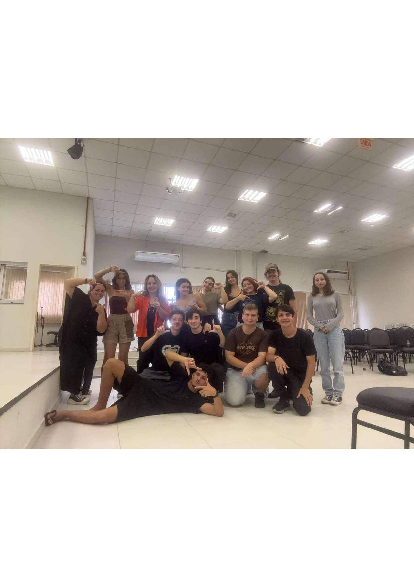
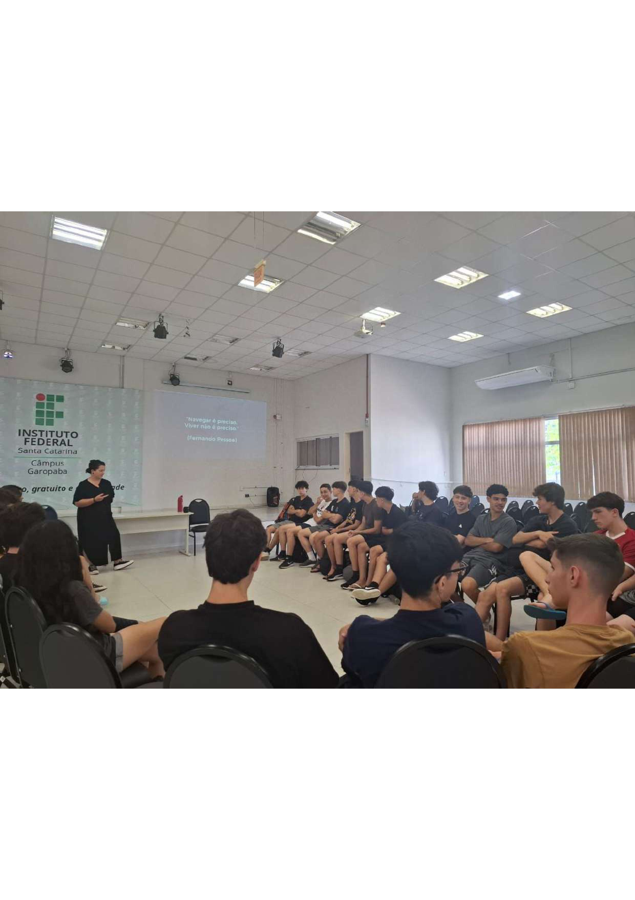
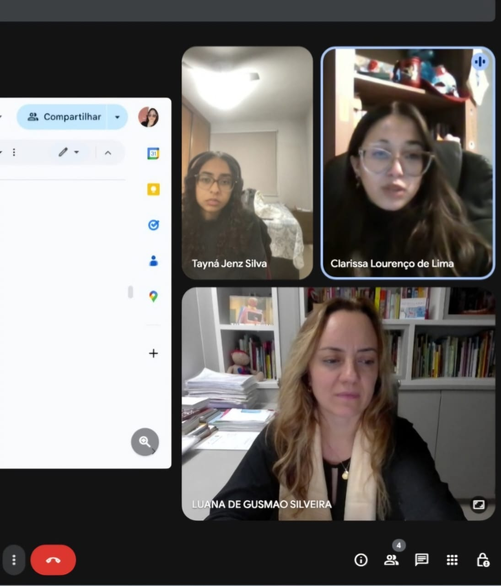
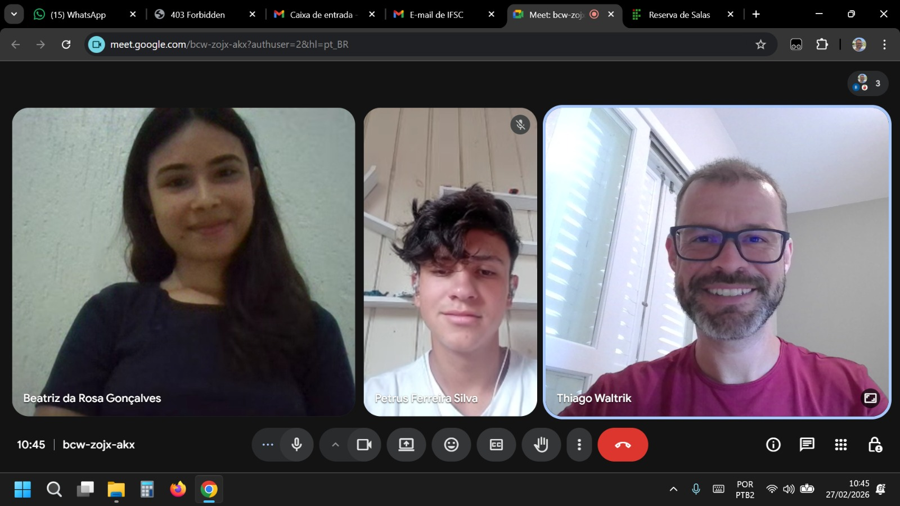
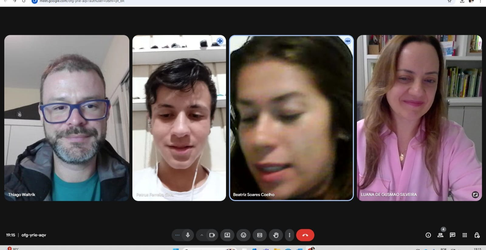
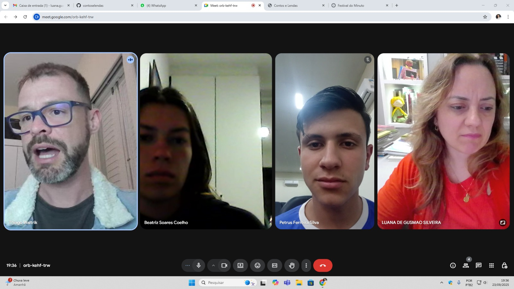

O projeto desenvolve ações contínuas de pesquisa, ensino e extensão, promovendo a circulação das narrativas populares do Sul de Santa Catarina em eventos acadêmicos, culturais e educativos.
PARTICIPAÇÃO EM EVENTOS


MOSTRA DE CURTAS-METRAGENS E SARAU LITERÁRIO


.jpeg)


.jpeg)

AÇÕES FORMATIVAS E PRODUÇÕES AUDIOVISUAIS








PUBLICAÇÕES ACADÊMICAS
SILVEIRA, Luana de Gusmão; WALTRIK, Thiago; GONÇALVES, Beatriz da Rosa; SILVA, Petrus Ferreira. Lendas, contos e causos como marcas identitárias do Sul de Santa Catarina: um mapeamento das narrativas de Laguna, Pescaria Brava e Imaruí. In: Seminário de Ensino, Pesquisa, Extensão e Inovação (SEPEI), 2026. Resumo expandido publicado em Anais.
SILVEIRA, Luana de Gusmão. Da literatura ao cinema: narrativas populares e produção de curtas-metragens no Ensino Médio. Texto em processo de avaliação para publicação em periódico científico, 2026.
SILVEIRA, Luana de Gusmão; WALTRIK, Thiago. Lendas, contos e causos do Sul de Santa Catarina: a difusão do patrimônio imaterial por meio do desenvolvimento de um repositório digital. Texto em processo de avaliação para publicação em periódico científico, 2026.
SILVEIRA, Luana de Gusmão. Lendas, contos e causos como marcas identitárias do Sul de Santa Catarina. In: Congresso Nacional de Educação (CONEDU), 10., 2024. Resumo publicado em Anais. ISSN: 2358-8829.
SILVEIRA, Luana de Gusmão. Da literatura ao cinema: contribuições para a formação do leitor por meio de adaptações fílmicas. Trabalho publicado nos Anais do VIII Congresso Internacional de História, Arte e Literatura no Cinema em Espanhol e em Português, realizado em Salamanca (Espanha), em 2025.